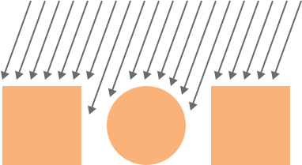
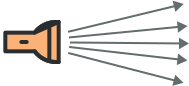

Světla
Jak jste v předchozí části zjistili, tak některé materiály potřebují světlo aby byly vidět. V této části si tedy ukážeme, jaké máme typy světel. Na závěr také zjistíme, jaké typy světel mají větší či menší vliv na výkon a co je to vypékání světla do textur.
Startovní kód
Abychom si mohli různé typy světel vyzkoušet, tak je tu pro vás opět přichystán startovní kód. Je úplně stejný jako ten pro minulou část, akorát používáme MeshStandardMaterial, protože pracuje se světlem. S pomocí startovního kódu z části o Webpacku si tedy vytvořte nový projekt a do JavaScript souboru si zkopírujte následující kód.
import './style.css';
import * as THREE from 'three';
import { OrbitControls } from 'three/examples/jsm/controls/OrbitControls';
// vytvoření scény
const scene = new THREE.Scene();
// vytvoření materiálu
const material = new THREE.MeshStandardMaterial({
color: 0xFAB278,
roughness: 0.5
});
// vytvoření kostky
const cube = new THREE.Mesh(
new THREE.BoxGeometry(1, 1, 1),
material
);
scene.add(cube);
// vytvoření koule
const sphere = new THREE.Mesh(
new THREE.SphereGeometry(0.5, 12, 10),
material
);
sphere.position.x = -1.5;
scene.add(sphere);
// vytvoření dodecahedronu (nebo co to je)
const dodecahedron = new THREE.Mesh(
new THREE.DodecahedronGeometry(0.5, 0),
material
);
dodecahedron.position.x = 1.5;
scene.add(dodecahedron);
// vytvoření kamery
const camera = new THREE.PerspectiveCamera(45, window.innerWidth / window.innerHeight, 0.1, 1000);
camera.position.z = 3;
scene.add(camera);
// vytvoření rendereru
const renderer = new THREE.WebGLRenderer({
canvas: document.getElementById("WebGLCanvas")
});
// nastavení velikosti canvasu a pixel ratio
renderer.setSize(window.innerWidth, window.innerHeight);
renderer.setPixelRatio(Math.min(window.devicePixelRatio, 2));
// přidání event listeneru pro změnu velikosti okna
window.addEventListener("resize", () => {
// aktualizace poměru stran kamery
camera.aspect = window.innerWidth / window.innerHeight;
camera.updateProjectionMatrix();
// změnění velikosti canvasu a pixel ratio
renderer.setSize(window.innerWidth, window.innerHeight);
renderer.setPixelRatio(Math.min(window.devicePixelRatio, 2));
});
// vytvoření OrbitControls ovládání
const controls = new OrbitControls(camera, renderer.domElement);
// zapnutí tlumení při posunutí
controls.enableDamping = true;
// tato funkce je volána každý frame
function tick() {
// protože máme zapnuté tlumení při posunutí,
// tak musíme OrbitControls aktualizovat
controls.update();
// vyrenderování scény na canvas
renderer.render(scene, camera);
}
// nastavení animační smyčky
// - funkce tick se bude volat každý frame
renderer.setAnimationLoop(tick);Do CSS souboru si ještě zkopírujte následující CSS styly pro odstranění defaultních marginů a paddingů.
*, *::before, *::after {
padding: 0;
margin: 0;
}
body {
overflow: hidden;
}Po spuštění aplikace by jste neměli vidět nic, protože MeshStandardMaterial potřebuje světlo k tomu, aby byl vidět.
Typy světel
Stejně jako máme různé typy materiálů, tak máme různé typy světel. Postupně si je tu ukážeme. Začneme s tím nejjednoduším, což je AmbientLight.
Ambient Light
AmbientLight světlo globálně a rovnoměrně osvětluje všechny objekty ve scéně. Nezáleží tedy na tom kde je umístěno, bude mít vliv na všechny objekty ve scéně. Takže jej jen vytvoříme a přidáme do scény. Při jeho vytváření specifikujeme barvu světla a jeho intenzitu.
/* ... */
// vytvoření AmbientLight světla
const ambientLight = new THREE.AmbientLight(0xffffff, 0.4);
// přidání AmbientLight světla do scény
scene.add(ambientLight);Pokud jste si zkopírovali kód z předchozí ukázky, tak by jste na scéně měli objekty vidět. Budou na každém místě stejně osvíceny.
AmbientLight se používá k základnímu osvětlení scény, protože odrážení světla je velmi těžké simulovat a bylo by to náročné na výkon. Pokud bychom jej nepoužili, tak budou neosvětlené části objektů tmavé. Pokud ale používáme k základnímu osvětlení environment mapu, kterou jsme si ukazovali v předchozí části, tak AmbientLight nepotřebujeme.
Directional Light
Jako druhý typ světla si ukážeme DirectionalLight. Jedná se o světlo, které je vyzařováno určitým směrem jakoby paralelně a nikdy nekončí. Běžně se používá k simulaci denního světla. V podstatě simuluje světlo ze slunce, jelikož je tak daleko, že jeho polohu můžeme považovat za nekonečnou. Aby jste lépe pochopili jak DirectionalLight funguje, tak jsem zde pro vás připravil obrázek. Prostě se jedná o světlo, které působí všude stejným směrem, jak na obrázku ukazují šipky. Lépe to v textu vysvětlit neumím.
Stejně jako u AmbientLight, tak i u DirectionaLight nezáleží na jeho pozici ve scéně, protože působí všude stejně. Jeho pozice ale určuje jeho směr. Světlo se bude vyzařovat ve směru, který určuje pozice DirectionalLight světla a středu scény [0, 0, 0]. Vzdálenost není důležitá, pokud nepoužíváme stíny. O těch je ale až další část. Následující ukázka ukazuje, jak můžeme DirectionalLight vytvořit. Jako parametr při jeho vytváření předáváme barvu světla a jeho intenzitu.
/* ... */
// vytvoření DirectionalLight světla
const directionalLight = new THREE.DirectionalLight(0xffffff, 0.8);
// nastavení směru DirectionalLight světla
directionalLight.position.set(0.5, 1.5, 0.3);
// přidání DirectionalLight světla do scény
scene.add(directionalLight);Po spuštění aplikace by jste měli vidět, že jsou objekty DirectionalLight světlem osvíceny.
Aby jste lépe pochopili, jak pozice DirectionalLight světla určuje jeho směr, tak jsem tu pro vás připravil menší vizualizaci, ve které si můžete pozici DirectionalLight světla měnit.
Hemisphere Light
Světlo, které si ukážeme teď, je hodně podobné AmbientLight. Jedná se o HemisphereLight. Oproti AmbientLight, které nám umožňuje nastavit pouze jednu barvu světla, můžeme pro HemisphereLight nastavit barvy dvě. Jedna je pro barvu světla z oblohy a druhá ze země. Vytváří to takový jakoby barevný gradient. Až si HemisphereLight přidáme do našeho příkladu, tak uvidíte co tím myslím. V textu se to vysvětluje hrozně špatně. Můžeme si jej přidat namísto AmbientLight, takže si jej smažte nebo zakomentujte. Při vytváření HemisphereLight předáváme jako parametr barvu světla z oblohy, barvu světla ze země a intenzitu světla.
/* ... */
// // vytvoření AmbientLight světla
// const ambientLight = new THREE.AmbientLight(0xffffff, 0.4);
// // přidání AmbientLight světla do scény
// scene.add(ambientLight);
// vytvoření HemisphereLight světla
// - barva světla z oblohy je modrá a barva světla ze země je červená
const hemisphereLight = new THREE.HemisphereLight(0x0000ff, 0xff0000, 0.4);
// přidání HemisphereLight do scény
scene.add(hemisphereLight);
/* ... */Po spuštění aplikace si můžete HemisphereLight prohlédnout.
Možná s DirectionalLight světlem, které ve scéně máme, není moc vidět co vlastně HemisphereLight dělá. Můžete si tedy zkusit zakomentovat přidání DirectionalLight světla do scény a spustit si aplikaci ještě jednou.
// scene.add(directionalLight);Point Light
Jako další typ světla si ukážeme PointLight. U tohoto světla již záleží na jeho pozici, protože se jedná o jeden bod světla, který je vyzařován na všechny strany. Často se používá například pro replikování vyzařování světla z nějaké žárovky. Při jeho vytváření můžeme specifikovat barvu světla, intenzitu, a pokud chceme, tak také maximální dosah světla (defaultně není nastavený žádný limit) a míru tlumení světla podél vzdálenosti světla. Defaultní míra tlumení světla je 1, ale pro realistické renderování bychom ji mohli nastavit na hodnotu 2. To se píše v dokumentaci. Pokud nevíte co těmito vlastnosti myslím, tak nevadí. Budete si je moci vyzkoušet v interaktivní ukázce.
Následující ukázka ukazuje, jak si můžeme PointLight přidat do našeho příkladu. Pro lepší viditelnost také odstraňujeme DirectionalLight, které jsme ve scéně měli.
/* ... */
// scene.add(directionalLight);
// vytvoření PointLight světla
const pointLight = new THREE.PointLight(0xffffff, 1, 3);
// nastavení pozice PointLight světla
pointLight.position.set(0.7, 1, 1.5);
// přidání PointLight světla do scény
scene.add(pointLight);Po spuštění aplikace si můžete PointLight prohlédnout.
V následující interaktivní ukázce si můžete zkusit měnit různé vlastnosti PointLight světla a pochopit je tak.
Spot Light
Další světlo, které si ukážeme, funguje jako baterka. Jedná se o SpotLight. Funguje tak, že vyzařuje světlo v jednom směru z jednoho bodu ve formě kužele. Jeho velikost se tedy zvětšuje, čím dále se od startovního bodu světla dostáváme. Prostě si to představte jako když svítí baterka.
Při vytváření SpotLight světla předáváme jako parametr barvu světla, intenzitu světla, dosah světla (defaultní je 0, což znamená žádný limit) a můžeme také předat úhel, takové rozmazání krajů (nevím jak to nazvat) a míru tlumení světla. Opět si to budete moci vyzkoušet v interaktivní ukázce. Chápu že z tohoto textu se to pochopit nedá.
Následující ukázka ukazuje, jak si můžeme SpotLight přidat do našeho příkladu. Aby se nám to nepletlo se SpotLight světlem, které jsme si zkoušel předtím, tak si můžeme zakomentovat jeho přidání do scény.
/* ... */
// scene.add(pointLight);
// vytvoření SpotLight světla
const spotLight = new THREE.SpotLight(0xffffff, 1.5, 3, Math.PI * 0.2);
// nastavení pozice SpotLight světla
// - na objekty bude svítit seshora
spotLight.position.y = 2;
// přidání SpotLight světla do scény
scene.add(spotLight);Když si aplikaci spustít, tak můžete vidět, že na objekty svítí seshora světlo
Jak jste viděli, rotaci jsme SpotLight světlu nenastavovali a směřovalo do středu scény na souřadnice [0, 0, 0]. To kam směruje, určuje pozice jeho targetu (vlastnost target). Jedná se o instanci třídy Object3D, takže můžeme změnit jeho pozici a změnit tak, kam SpotLight světlo směřuje. Po změně pozice targetu jej ale musíme přidat do scény aby to fungovalo.
Kód v následující ukázce posouvá target na ose X o 1.5.
/* ... */
// posunutí targetu (na jaké místo SpotLight světlo směřuje)
spotLight.target.position.x = 1.5;
// aby to fungovalo, tak musíme target přidat do scény
scene.add(spotLight.target);Když si teď aplikaci spustíte, SpotLight světlo bude směřovat směrem doprava.
Aby jste lépe pochopili různé vlastnosti SpotLight světla, tak jsem tu pro vás připravil interaktivní ukázku, kde si vlastnosti SpotLight světla můžete zkusit různě měnit.
Rect Area Light
Poslední typ světla, který tu zmíním, je RectAreaLight. Toto světlo vyzařuje světlo rovnoměrně z definovaného obdelníku. Dá se použít k simulaci světelných zdrojů jako jsou třeba jasná okna a tak podobně. Je ale o něco složitější na použití a funguje jen s MeshStandardMaterialem a MeshPhysicalMaterialem. Nemůžeme jej jen tak použít, nejdříve musíme inicializovat RectAreaLightUniformsLib. Nevím co to je, ale vím že to musíme udělat. Jak RectAreaLight světlo použít si tu ukazovat nebudeme, ale pokud si jej chcete prohlédnout na ukázce, tak můžete tady. Zdrojový kód je k tomu zde. Nenechte se odradit od jeho používání, když se podíváte na zdrojový kód toho příkladu, tak uvidíte že to zas tak těžké není. Mě se hlavně nechtělo jej tady popisovat.
Vliv světel na výkon
Prošli jsme si celkem 6 typů světel, které nám Three.js nabízí. Můžete je tedy ve svých aplikacích dle potřeby používat. Světla nás ale mohou stát hodně výkonu, proto je důležité vědět, která světla mají minimální vliv na výkon a která naopak velký. Měli bychom se snažit používat co nejméně světel a používat světla, která nás stojí méně výkonu. Zde jsem sepsal seznamy světel rozdělené podle jejich vlivu na výkon:
Minimální vliv na výkon:
- AmbientLight
- HemisphereLight
Střední vliv na výkon:
- DirectionalLight
- PointLight
Velký vliv na výkon:
- SpotLight
- RectAreaLight
Vypékání světel do textur
Protože světla mohou mít velký vliv na výkon, tak se je v některých případech můžeme rozhodnout nepoužít vůbec a namísto toho si světlo již připravit (vypéct) do textury. To můžeme udělat v nějakém 3D programu jako je třeba Blender. Na to jak to udělat bude na internetu určitě spoustu tutoriálů. Nevýhoda samozřejmě je, že poté světlem již nemůžeme pohybovat. Může se to tedy hodit třeba na nějaké statické scény.
Helpery
Pozicování a nastavování světel může být těžké. Proto nám Three.js poskytuje pro světla pár helperů, které nám s tím mohou pomoci. Už jste je vlastně viděli v interaktivních ukázkách, které se v této části nacházejí. Teď se je naučíme používat.
Directional Light Helper
Jako první si ukážeme DirectionalLightHelper. Helpery používáme tak, že si vytvoříme jejich instanci a do konstruktoru jako parametr předáme světlo, pro které chceme helper vytvořit. Poté vytvořený helper jen přidáme do scény a to je vše. Akorát pokud bychom později světlo nějakým způsobem změnili, tak často musíme helper aktualizovat pomocí metody update. To už by jste si sami ozkoušeli. A někdy je také potřeba zavolat na světle po jeho změně metodu updateMatrixWorld aby se helper aktualizoval. Nevím proč, jen jsem na to narazil, když jsem měl s aktualizací helperů problém. Tohle to vyřešilo.
Abychom si mohli helpery vyzkoušet v našem příkladu, tak si můžete v kódu vymazat všechna světla a začneme znovu. Můžete si zkopírovat následující kód, který vytváří DirectionalLight světlo a poté pro něj vytváří helper.
/* ... */
// vytvoření DirectionalLight světla
const directionalLight = new THREE.DirectionalLight(0xffffff, 0.8);
// nastavení směru DirectionalLight světla
directionalLight.position.set(0.5, 1.5, 0.3);
// přidání DirectionalLight světla do scény
scene.add(directionalLight);
// vytvoření helperu
const helper = new THREE.DirectionalLightHelper(directionalLight);
// přidání helperu do scény
scene.add(helper);V předchozí ukázce vidíte, jak si do scény DirectionalLightHelper přidat. Není to nic složitého. Po spuštění aplikace byste měli helper ve scéně vidět.
Hemisphere Light Helper
Jako další helper si ukážeme HemisphereLightHelper. Ten podle mě není moc užitečný, ale když existuje, tak si jej zkusíme vytvořit. Smažte si předchozí kód pro vytvoření DirectionalLightHelperu a zkopírujte si následující kód, který vytváří HemisphereLight a pro něj helper.
/* ... */
// vytvoření HemisphereLight světla
const hemisphereLight = new THREE.HemisphereLight(0x0000ff, 0xff0000, 0.4);
// přidání HemisphereLight do scény
scene.add(hemisphereLight);
// vytvoření helperu
const helper = new THREE.HemisphereLightHelper(hemisphereLight);
// přidání helperu do scény
scene.add(helper);Po spuštění aplikace si můžete HemisphereLightHelper ve scéně prohlédnout.
Point Light Helper
Teď si ukážeme PointLightHelper. Umožňuje nám vidět pozici PointLight světla. Smažte si předchozí kód a zkopírujte si kód z následující ukázky, který vytváří PointLight světlo a přidává pro něj helper.
/* ... */
// vytvoření PointLight světla
const pointLight = new THREE.PointLight(0xffffff, 1, 3);
// nastavení pozice PointLight světla
pointLight.position.set(0.7, 1, 1);
// přidání PointLight světla do scény
scene.add(pointLight);
// vytvoření helperu
// - jako druhý parametr nastavujeme velikost helperu
const helper = new THREE.PointLightHelper(pointLight, 0.2);
// přidání helperu do scény
scene.add(helper);Po spuštění aplikace si můžete PointLightHelper prohlédnout.
Spot Light Helper
Poslední helper, který si ukážeme, je SpotLightHelper. Smažte si předchozí kód, a zkopírujte si kód z následující ukázky, který vytváří SpotLight světlo a pro něj helper.
/* ... */
// vytvoření SpotLight světla
const spotLight = new THREE.SpotLight(0xffffff, 1.5, 3, Math.PI * 0.2);
// nastavení pozice SpotLight světla
spotLight.position.y = 2;
// přidání SpotLight světla do scény
scene.add(spotLight);
// posunutí targetu (na jaké místo SpotLight světlo směřuje)
spotLight.target.position.x = 1.5;
// aby to fungovalo, tak musíme target přidat do scény
scene.add(spotLight.target);
// vytvoření helperu
const helper = new THREE.SpotLightHelper(spotLight);
// přidání helperu do scény
scene.add(helper);
// jak jsem psal, tak někdy je potřeba zavolat metodu
// updateMatrixWorld, když něco nefunguje - může to pomoct
spotLight.target.updateMatrixWorld();
helper.update();Po spuštění aplikace si můžete SpotLightHelper prohlédnout.
Pro tuto část je to vše. Dozvěděli jste se o různých typech světel, které teď ve svých scénách můžete používat. Když ale světla používáme, tak často chceme mít i stíny. Jak je nastavit se dozvíte v další části, která se stíny zabývá.